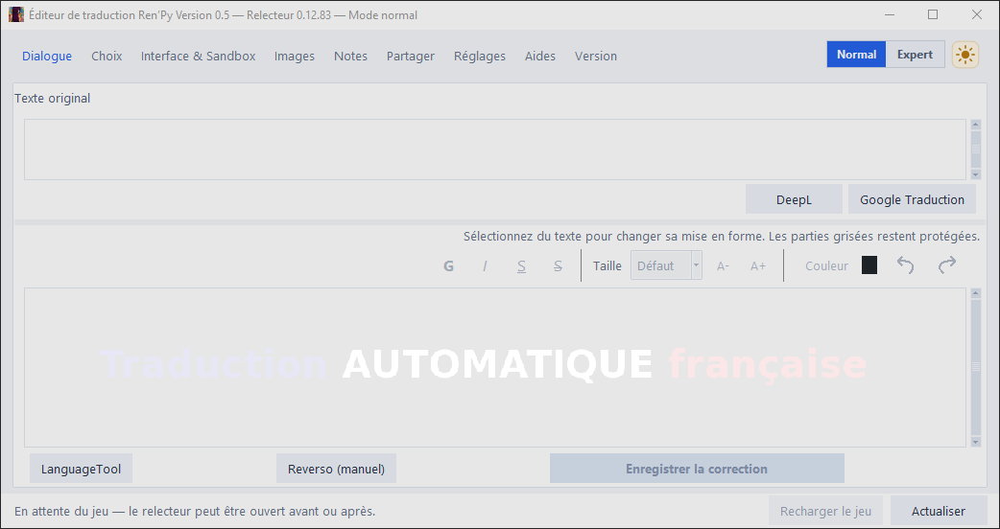
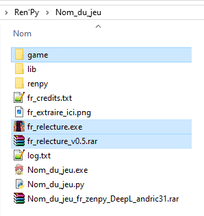
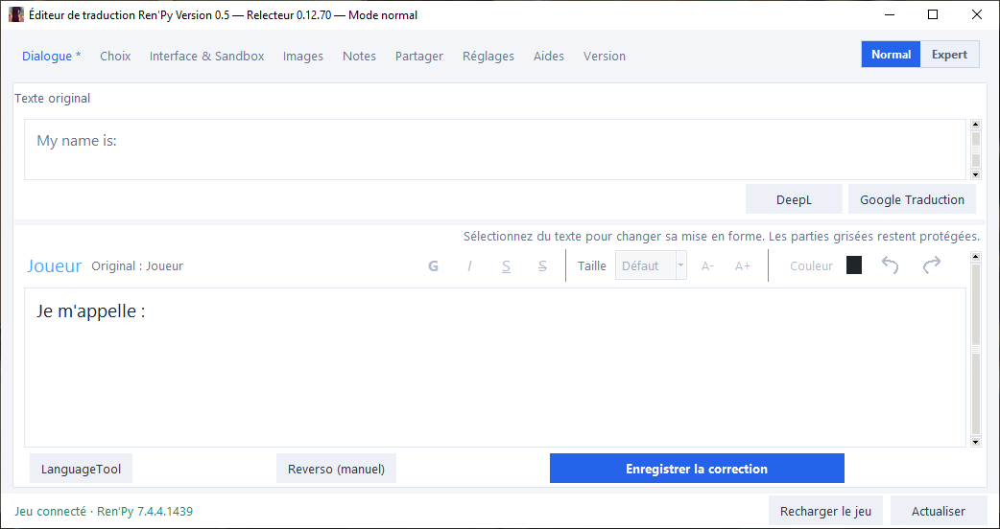
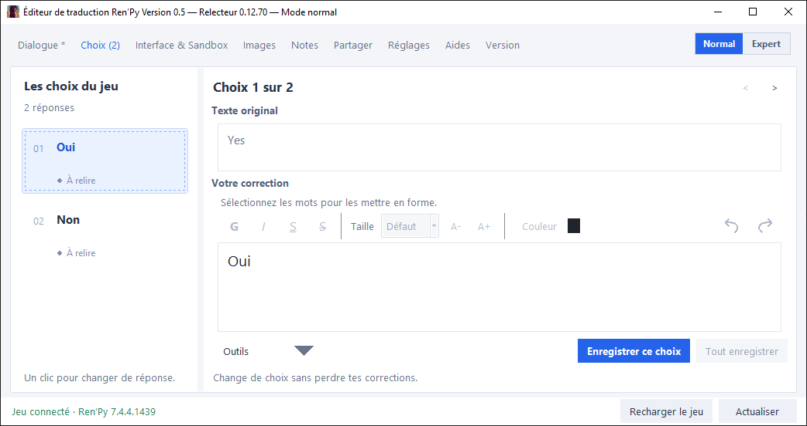
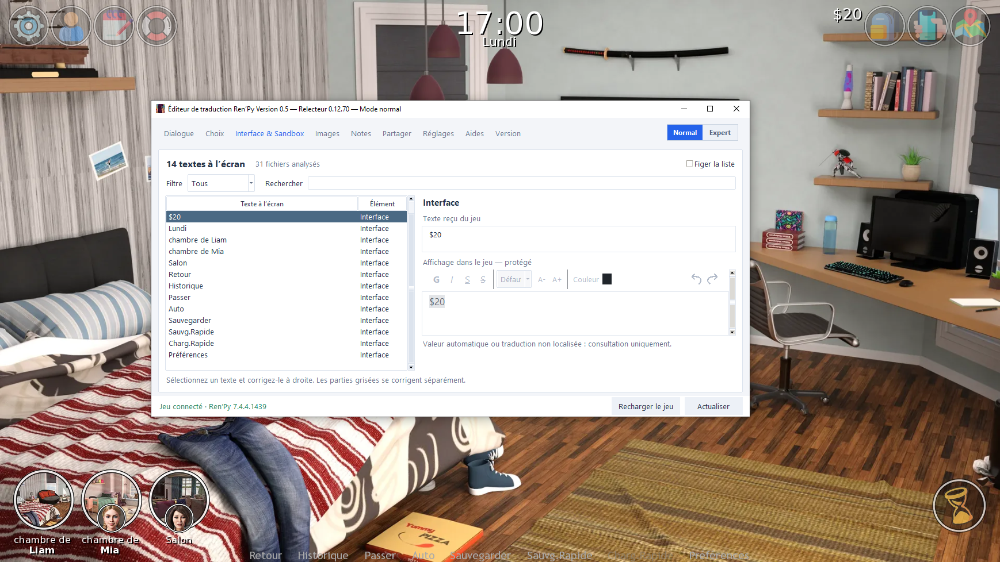
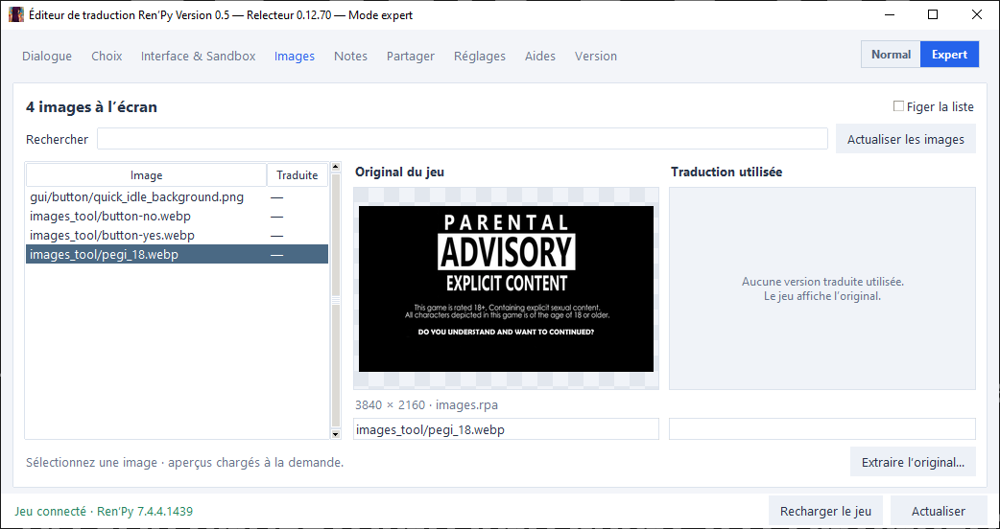
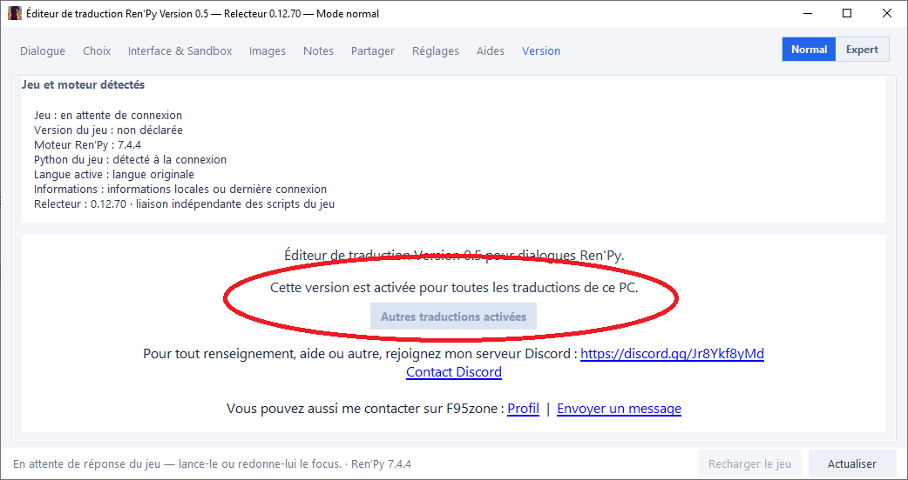
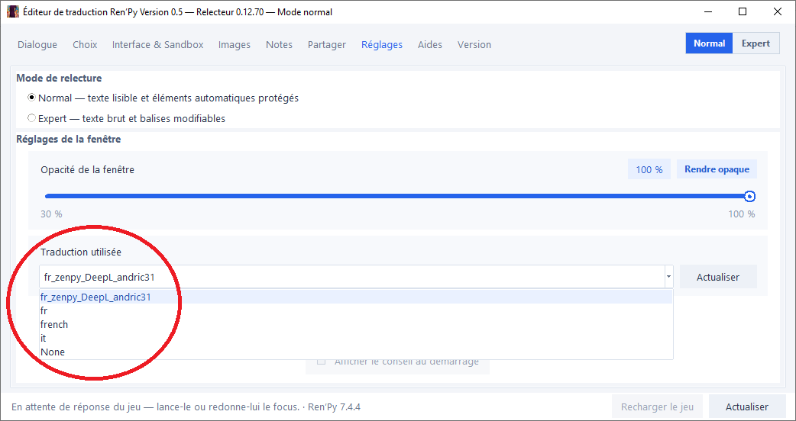

🛠️ Présentation
Le Relecteur Ren'Py est un outil que j'utilise pour relire, corriger et contrôler mes traductions directement pendant une partie. Il récupère ce qui est réellement affiché par le jeu, retrouve la traduction correspondante et permet de la modifier sans devoir chercher manuellement la bonne ligne dans les fichiers.
Deux modes sont disponibles : Normal pour la relecture courante et Expert pour les balises, sources et cas techniques.
Le mode Normal privilégie une interface lisible : le texte Ren'Py est rendu visuellement, les parties générées par le jeu sont protégées et les éléments techniques sont masqués autant que possible. Le mode Expert donne accès au texte brut, aux balises et aux informations de source.
La traduction
fr_zenpy_DeepL_andric31 est prioritaire et utilisable sans activation supplémentaire.
L'utilisation avec d'autres dossiers de traduction peut être débloquée sur demande et par PC depuis l'onglet Version.
🧭 Sommaire
- 🔗 Téléchargement & compatibilité
- 🚀 Installation
- 💬 Dialogue & correction
- 🟦 Modes Normal / Expert
- 🔀 Choix du jeu
- 🧩 Interface & Sandbox
- 🖼️ Images à l'écran
- 🧠 Détection de la source de traduction
- 🔄 Enregistrement & rechargement du jeu
- ⚙️ Réglages
- 🔓 Autres traductions & activation
- 📦 Notes & partage
- 🧠 Balises et éléments protégés
- ❓ FAQ / dépannage
- 🆕 Évolution de l'outil
🔗 Téléchargement & compatibilité
🔗 Télécharger le Relecteur Ren'Py
L'outil est conçu pour les jeux Ren'Py 7 et 8. Certaines fonctions dépendent toutefois de la façon dont chaque jeu a été construit : écrans personnalisés, systèmes de texte maison, images générées, etc.
🚀 Installation
Extraire l’archive .rar dans le dossier du jeu (là où se trouve l’exécutable .exe du jeu).

Dossier du jeu\ ├─ fr_relecture.exe └─ game\ └─ fr_relecture.rpe
fr_relecture.exeà la racine du jeu, à côté de l'exécutable du jeu.fr_relecture.rpedans le dossiergame.- Si vous venez d'ajouter le fichier
.rpe, redémarrez complètement le jeu une fois. - Lancez le relecteur avant, pendant ou après le jeu : il se reconnecte automatiquement dès que la liaison est disponible.
💬 Dialogue & correction en temps réel
L'onglet Dialogue suit la réplique réellement affichée dans le jeu. Il affiche l'original et la traduction utilisée, puis permet de corriger la phrase directement. Le retour arrière / historique Ren'Py est également pris en compte : le relecteur se resynchronise sur l'écran courant au lieu de conserver une ancienne phrase.
- Texte original : phrase source anglaise retrouvée dans le jeu ou la traduction.
- Correction : traduction française éditable.
- Mise en forme visuelle : gras, italique, souligné, barré, taille et couleur sans avoir à écrire les balises à la main.
- DeepL / Google Traduction : aide rapide à partir du texte original.
- LanguageTool / Reverso : outils de vérification du français.
- Nom du personnage : affiché en lecture seule avec son style ; un clic permet de le retrouver dans Interface & Sandbox.
Les valeurs que le jeu ajoute dynamiquement peuvent apparaître grisées ou protégées. Elles ne sont pas modifiées par erreur avec le reste du dialogue : le bouton Corriger le texte grisé ouvre la traduction liée correspondante quand elle existe.

🟦 Modes Normal et Expert
Mode Normal
- Interface pensée pour la relecture sans afficher le code Ren'Py inutilement.
- Les balises de mise en forme sont rendues visuellement.
- Variables, ajouts automatiques et parties non traduisibles restent protégés.
- Les corrections sont limitées aux éléments de traduction réellement modifiables.
Mode Expert
- Affiche le texte brut, les balises et échappements Ren'Py.
- Affiche la source de traduction utilisée et la ligne correspondante.
- Traductions liées… permet d'inspecter et corriger les valeurs utilisées par des variables/remplacements.
- Ouvrir la traduction ouvre directement le bon fichier à la ligne concernée.
- Des fonctions supplémentaires sont disponibles dans Images, notamment l'extraction de l'original.

🔀 Choix du jeu
Lorsqu'un écran de choix apparaît, l'onglet Choix liste les réponses détectées. Chaque option peut être relue séparément, avec son original et sa traduction. L'onglet indique aussi les nouveaux choix à relire.
- Navigation rapide entre toutes les réponses présentes à l'écran.
- Correction avec la même mise en forme que les dialogues en mode Normal.
- Accès direct au fichier de traduction en mode Expert.
- Possibilité d'enregistrer un choix individuellement ou plusieurs corrections lorsque l'écran le permet.

🧩 Interface & Sandbox
Cet onglet affiche les textes actuellement visibles dans le jeu, pas seulement les dialogues : interface, personnage, boutons, choix, zones de saisie et autres textes d'écran.
- Filtre placé à gauche pour afficher Tous / Interface / Personnage / Dialogue / Choix / Saisie.
- Recherche dans la liste des éléments visibles.
- Figer la liste pour examiner un écran pendant que le jeu continue.
- Correction à droite avec les outils de mise en forme lorsque la source est modifiable.
- Un nom de personnage cliqué depuis Dialogue est retrouvé ici sans forcer un filtre Personnage.

🖼️ Images présentes à l'écran
L'onglet Images détecte uniquement les images de l'écran actuel. Il permet de comparer la ressource originale du jeu et la version traduite réellement utilisée.
- Liste des images visibles avec indication de présence d'une version traduite.
- Aperçu côte à côte : Original du jeu / Traduction utilisée.
- Recherche et possibilité de figer la liste.
- Chargement des aperçus uniquement à la demande pour éviter de ralentir le jeu.
- En mode Expert : bouton Extraire l'original… quand la source peut être retrouvée dans les fichiers ou une archive RPA.

🧠 Détection de la source de traduction
Un même texte peut exister dans plusieurs endroits : fichier .rpy, bloc old/new,
strings.rpy ou encore un JSON utilisé par replaceText. Le relecteur compare ce qui est réellement affiché
à l'écran avec les traductions trouvées afin d'identifier la source utilisée.
Ordre de décision :
- Recherche d'abord une traduction Ren'Py
.rpycorrespondant au texte réellement affiché. - Si le résultat ne correspond pas, vérifie si
replaceTextmodifie ensuite cette traduction. - Le JSON n'est donc pas considéré comme source simplement parce qu'une clé similaire existe dedans.
En mode Expert, la ligne d'information précise le fichier et la ligne utilisés lorsque la source a pu être confirmée.
🔄 Enregistrement & rechargement du jeu
Enregistrer la correction écrit directement dans le fichier de traduction concerné. Le comportement dépend ensuite du type de traduction :
- replaceText / JSON : le relecteur demande un rechargement immédiat du processeur lorsqu'il est disponible.
- traduction Ren'Py .rpy : utilisez Recharger le jeu pour demander à Ren'Py de relire ses scripts.
Le bouton Recharger le jeu est intégré au relecteur. Il n'est plus nécessaire de conserver un autoreload permanent qui modifierait le comportement du jeu pendant toute la session.
⚙️ Réglages
- Mode de relecture : Normal ou Expert.
- Opacité de la fenêtre : barre moderne, valeur par défaut 90 %.
- Rendre opaque : retour immédiat à 100 %.
- Traduction utilisée : sélecteur disponible pour les autres dossiers après activation.
- Toujours au premier plan.
- Message de confirmation d'enregistrement.

Les réglages sont mémorisés dans fr_relecture_config.json.
🔓 Utiliser le relecteur avec d'autres traductions
Le relecteur reste fixée sur fr_zenpy_DeepL_andric31. Depuis l'onglet Version,
le bouton Activer pour d'autres traductions permet de demander le déblocage pour un PC.
Une fois l'autorisation accordée :
- le sélecteur Traduction utilisée devient disponible dans Réglages ;
- la traduction fr_zenpy_DeepL_andric31 reste prioritaire ;
- viennent ensuite les dossiers commençant par
fr,french,francaisoufrançais; - puis les autres dossiers présents dans
game/tl.


la licence signée est enregistrée dans
%LOCALAPPDATA%\andric31Apps\fr_relecture\activation.Elle est liée à l'application et au PC. Une fois activée, la vérification se fait localement
Une personne qui n'a jamais demandé de déblocage ne génère aucune requête d'activation. Les vérifications réseau ne sont utilisées que temporairement pendant une demande en attente.
📦 Notes & partage des corrections
Notes
L'onglet Notes permet de conserver des remarques de relecture dans fr_relecture_notes.txt.
Partager
Deux types d'archives peuvent être générés :
- .rpy / .json ZIP : uniquement les fichiers de traduction utiles aux corrections.
- Dossier complet ZIP : archive du dossier de traduction complet.
🧠 Balises et éléments protégés
Variables Ren'Py
Les variables entre crochets ne doivent généralement pas être traduites. En mode Normal, elles sont conservées et les valeurs calculées par le jeu peuvent être affichées comme parties protégées.
[config.name] [mc] [mom.name] [city]
Mise en forme Ren'Py
Le mode Normal rend les styles visuellement ; le mode Expert affiche les balises brutes.
{b}gras{/b}
{i}italique{/i}
{u}souligné{/u}
{s}barré{/s}
{color=#FF0000}couleur{/color}
{size=+5}taille{/size}
Texte composé par le jeu
Lorsqu'une phrase mélange une partie traduisible et une valeur ajoutée par le jeu, la zone de correction peut être coupée en deux : la traduction à gauche et l'ajout protégé à droite. Le cadre garde la même hauteur que l'éditeur normal pour éviter les changements de disposition pendant la relecture.

❓ FAQ / dépannage
Le relecteur reste vide alors que le jeu est ouvert
Vérifiez que game/fr_relecture.rpe est bien présent puis redémarrez le jeu. Le bouton Actualiser
force également un nouveau relevé de l'écran courant.
Une partie du texte est grisée
Elle est probablement générée par le jeu, liée à une variable ou issue d'une autre traduction. Utilisez Corriger le texte grisé ou, en Expert, Traductions liées….
Le nom du personnage doit être corrigé
Le nom affiché dans Dialogue est volontairement en lecture seule. Cliquez dessus pour l'ouvrir dans Interface & Sandbox, où les outils de correction et de mise en forme sont disponibles.
Une correction .rpy n'apparaît pas encore dans le jeu
Cliquez sur Recharger le jeu après l'enregistrement.
L'activation est-elle liée à toutes les applications Andric31 ?
Non. Une activation est liée à une application précise et à un PC. Une future application utilisera sa propre licence
dans un sous-dossier séparé de %LOCALAPPDATA%\andric31Apps.
🆕 Évolution de l'outil
Le projet a beaucoup évolué depuis les premières versions. Les principales étapes actuelles sont :
- v0.1 → v0.4 : base de relecture, corrections, choix, ouverture des fichiers et premiers outils externes.
- v0.5-0.12.x : refonte complète de l'interface et de la détection en jeu.
- Ajout des modes Normal / Expert et de la mise en forme visuelle.
- Ajout de Interface & Sandbox et de la détection priorisée selon l'onglet actif.
- Ajout de l'onglet Images avec comparaison original / traduction utilisée.
- Amélioration de la détection
.rpy/replaceTextet des textes dynamiques. - Rechargement Ren'Py intégré et synchronisation lors des retours arrière.
- Sélecteur de traduction et système d'activation par PC pour les traductions externes.
- v0.5-0.12.69 : licence locale signée et stockage commun sous
%LOCALAPPDATA%\andric31Apps.
🚧 État actuel
✅ Le relecteur est utilisé activement pour mes traductions et continue d'évoluer au fil des jeux rencontrés. L'objectif reste le même : rendre la relecture en contexte plus rapide, plus sûre et beaucoup moins technique qu'une correction manuelle directe dans les fichiers Ren'Py.